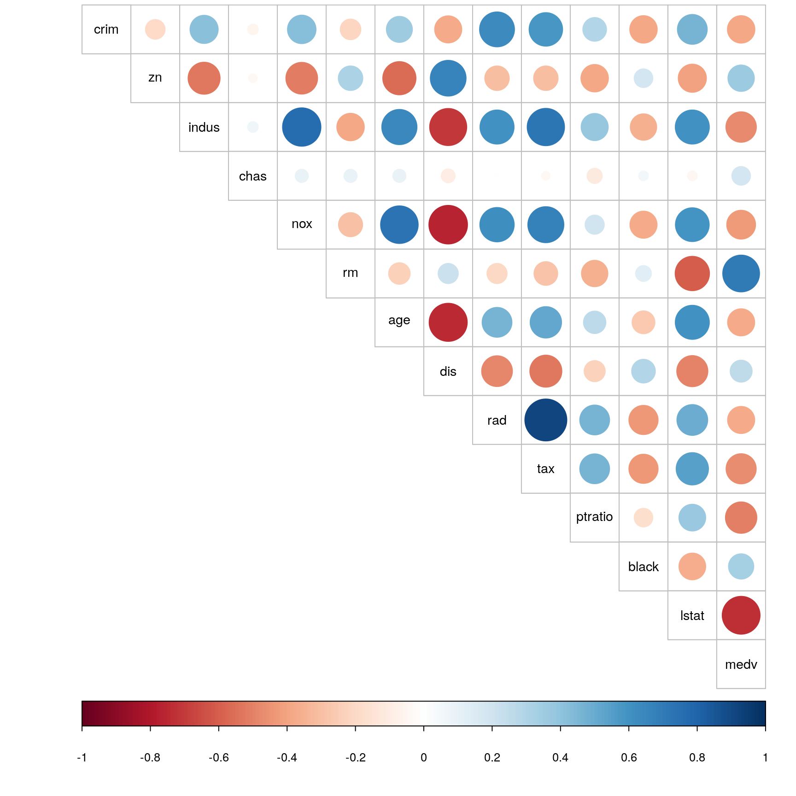
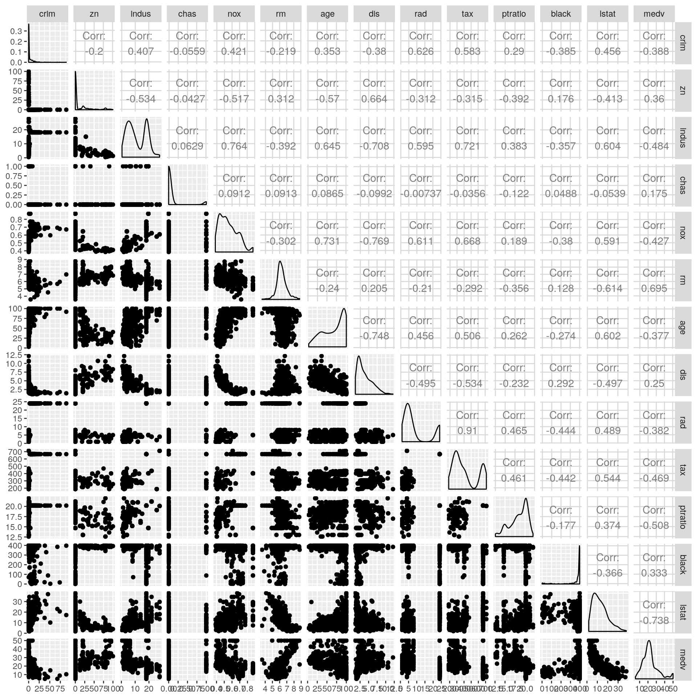
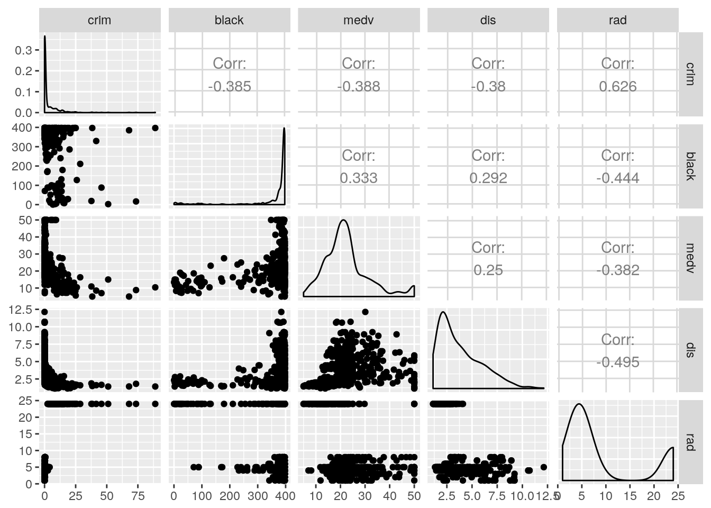
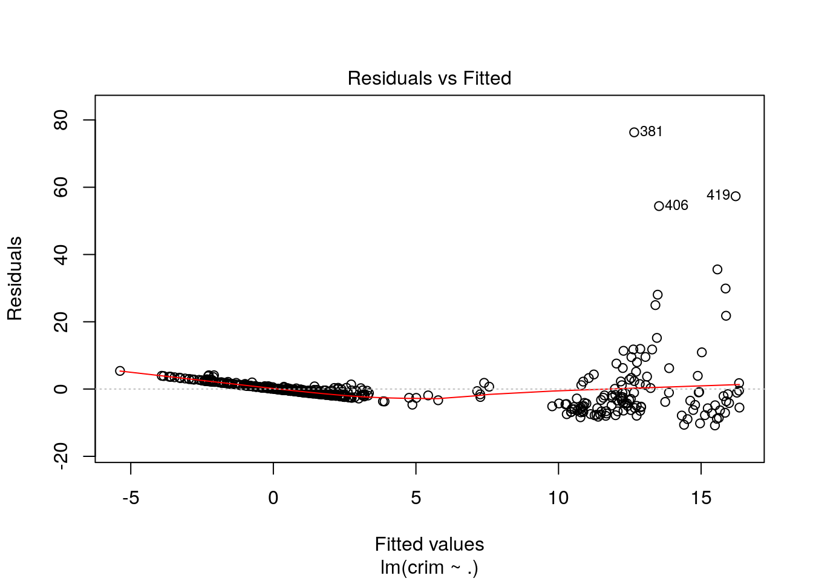
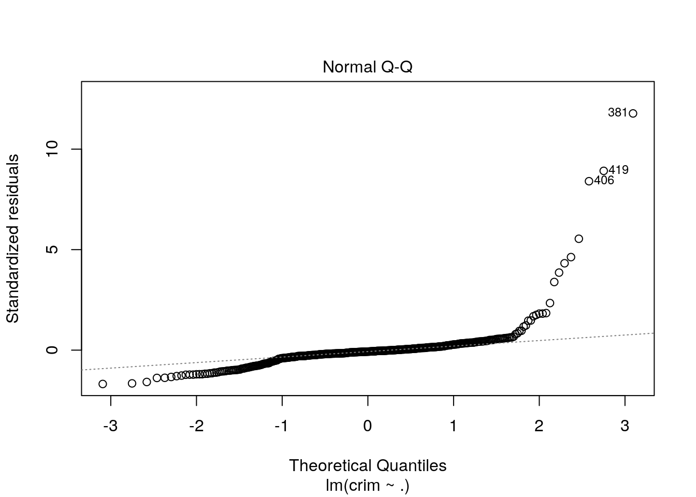
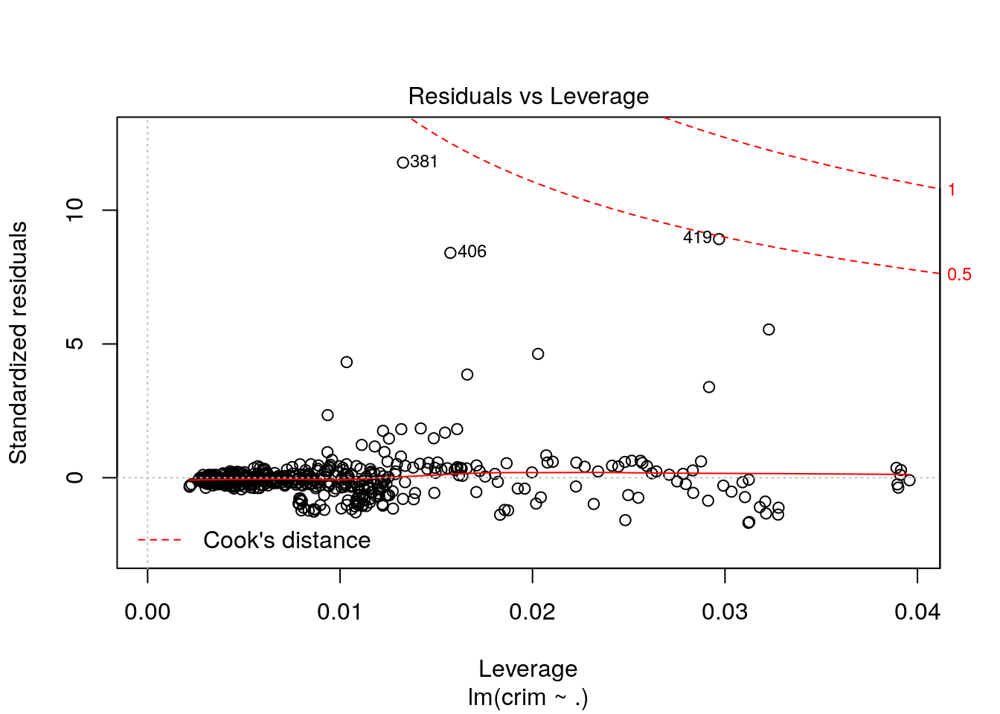

Boston Housing Dataset
Kisun Pokharel
Natural Resources Institute Finland (Luke)kisun.pokharel@helsinki.fi
December 18, 2017
Abstract
This report is the final assignment of the IODS course. The Boston dataset available from MASS package was used to perform multiple linear regression analysis . The analysis showed that the housing price in Boston may determine if the owner could have crime history. In other words, the price of owner occupied homes proved to be highly significant in determining the crime rate.
Introduction
The Boston Housing Dataset contains information related to housing in the area of Boston Mass.
Data Wrangling
Before proceeding with the statistical analyses, we will first go through some data wrangling steps. In many cases, the available (raw) data may contain noise such as missing values and are usually untidy and poorly formatted. Therefore, the aim of data wrangling step is to convert raw data into clean (analysis ready) data and to make sure that the dataset satisfies the following conditions:
- all observations are stored in rows
- all variables are in columns
- all data under study are kept in single dataset
The R script for data wrangling can be found with this link.
Data Summary
The Boston data was collected to study the housing values in the suburbs of Boston. The table contains 506 observations for 14 different variables. The descriptions for each of the 14 variables are listed below.
| Variables | Description |
|---|---|
| crim | per capita crime rate by town. |
| zn | proportion of residential land zoned for lots over 25,000 sq.ft. |
| indus | proportion of non-retail business acres per town. |
| chas | Charles River dummy variable (= 1 if tract bounds river; 0 otherwise). |
| nox | nitrogen oxides concentration (parts per 10 million). |
| rm | average number of rooms per dwelling. |
| age | proportion of owner-occupied units built prior to 1940. |
| dis | weighted mean of distances to five Boston employment centres. |
| rad | index of accessibility to radial highways. |
| tax | full-value property-tax rate per $10,000. |
| ptratio | pupil-teacher ratio by town. |
| black | 1000(Bk - 0.63)^2 where Bk is the proportion of blacks by town. |
| lstat | lower status of the population (percent). |
| medv | median value of owner-occupied homes in $1000s. |
First and foremost, it is important to get an overview of the data being analysed. As mentioned earlier, Boston data is available from MASS package and thus can be directly imported into R for further analysis.
Data Exploration
Preliminary hypotheses
Just by looking at the varibles above, one can make few assumptions regarding the inter-relationships between different variables. Let’s start with some assumptions:
Here, the main goal of the analysis is to study how crime rate is associated with other aspects in Boston. After going through the background information, it is a bit easier to identify interesting variables that could be related to criminal activities. Personally, I believe that the following are the four interesting variables that are associated with crime rates:
1. Accessibility to radial highways (rad) : In my opinion, accessibility to radial highways plays vital role when it comes to crime related activities. Criminals may prefer towns with rapid access to radial highways especially for escaping purpose. Therefore, I believe that accessibility to radial highways may contribute to higher crime rates.
2. Value of owner-occupied homes (medv) : Usually, the crime-related activities are common with individuals who do not have enough property. They say that one of the main reasons for crime is poverty. Individual with basic income may also have homes with lower value but I think we can also correlate the value of house one has with crime-rate. In other words, value of owner-occupied home should be negatively correlated with crime.
3. Distance to employment centers in Boston (dis) : I hypothesize that the farther the residential area from employment centers, the higher the crime rates.
4. Proportion of blacks(black) : There have been an impression that blacks commit more crime compared to whites. Therefore, I hypothesize that proportion of blacks is positively correlated with crime rate.
In the following section, we will see in details how my hypotheses are explained by the data.
Non-graphical data exploration
Non-graphical data exploration is the first step before we start analyzing the data. This step different aspects of the data here we will cover three of those:
- measures of central tendency (mean, meadian)
- measures of variability (interquartile range, standard deviation)
- relationships between variables (correlation)
Now, let’s first look at the summary of the boston data in the form of table (instead of default layout) using pandoc.table function of pander package.
pandoc.table(summary(Boston), caption = "Summary of Boston data", split.table = 100)##
## --------------------------------------------------------------------------------------
## crim zn indus chas nox
## ------------------ ---------------- --------------- ----------------- ----------------
## Min. : 0.00632 Min. : 0.00 Min. : 0.46 Min. :0.00000 Min. :0.3850
##
## 1st Qu.: 0.08204 1st Qu.: 0.00 1st Qu.: 5.19 1st Qu.:0.00000 1st Qu.:0.4490
##
## Median : 0.25651 Median : 0.00 Median : 9.69 Median :0.00000 Median :0.5380
##
## Mean : 3.61352 Mean : 11.36 Mean :11.14 Mean :0.06917 Mean :0.5547
##
## 3rd Qu.: 3.67708 3rd Qu.: 12.50 3rd Qu.:18.10 3rd Qu.:0.00000 3rd Qu.:0.6240
##
## Max. :88.97620 Max. :100.00 Max. :27.74 Max. :1.00000 Max. :0.8710
## --------------------------------------------------------------------------------------
##
## Table: Summary of Boston data (continued below)
##
##
## --------------------------------------------------------------------------------------------------
## rm age dis rad tax ptratio
## --------------- ---------------- ---------------- ---------------- --------------- ---------------
## Min. :3.561 Min. : 2.90 Min. : 1.130 Min. : 1.000 Min. :187.0 Min. :12.60
##
## 1st Qu.:5.886 1st Qu.: 45.02 1st Qu.: 2.100 1st Qu.: 4.000 1st Qu.:279.0 1st Qu.:17.40
##
## Median :6.208 Median : 77.50 Median : 3.207 Median : 5.000 Median :330.0 Median :19.05
##
## Mean :6.285 Mean : 68.57 Mean : 3.795 Mean : 9.549 Mean :408.2 Mean :18.46
##
## 3rd Qu.:6.623 3rd Qu.: 94.08 3rd Qu.: 5.188 3rd Qu.:24.000 3rd Qu.:666.0 3rd Qu.:20.20
##
## Max. :8.780 Max. :100.00 Max. :12.127 Max. :24.000 Max. :711.0 Max. :22.00
## --------------------------------------------------------------------------------------------------
##
## Table: Table continues below
##
##
## ------------------------------------------------
## black lstat medv
## ---------------- --------------- ---------------
## Min. : 0.32 Min. : 1.73 Min. : 5.00
##
## 1st Qu.:375.38 1st Qu.: 6.95 1st Qu.:17.02
##
## Median :391.44 Median :11.36 Median :21.20
##
## Mean :356.67 Mean :12.65 Mean :22.53
##
## 3rd Qu.:396.23 3rd Qu.:16.95 3rd Qu.:25.00
##
## Max. :396.90 Max. :37.97 Max. :50.00
## ------------------------------------------------After getting a statistical summary of, it’s worthwhile to see to what extent each variables are correlated. For that, we use corr() function on Boston data.
corr_boston<-cor(Boston) %>% round(2)
pandoc.table(corr_boston, split.table = 100)##
## ---------------------------------------------------------------------------------------------
## crim zn indus chas nox rm age dis rad tax
## ------------- ------- ------- ------- ------- ------- ------- ------- ------- ------- -------
## **crim** 1 -0.2 0.41 -0.06 0.42 -0.22 0.35 -0.38 0.63 0.58
##
## **zn** -0.2 1 -0.53 -0.04 -0.52 0.31 -0.57 0.66 -0.31 -0.31
##
## **indus** 0.41 -0.53 1 0.06 0.76 -0.39 0.64 -0.71 0.6 0.72
##
## **chas** -0.06 -0.04 0.06 1 0.09 0.09 0.09 -0.1 -0.01 -0.04
##
## **nox** 0.42 -0.52 0.76 0.09 1 -0.3 0.73 -0.77 0.61 0.67
##
## **rm** -0.22 0.31 -0.39 0.09 -0.3 1 -0.24 0.21 -0.21 -0.29
##
## **age** 0.35 -0.57 0.64 0.09 0.73 -0.24 1 -0.75 0.46 0.51
##
## **dis** -0.38 0.66 -0.71 -0.1 -0.77 0.21 -0.75 1 -0.49 -0.53
##
## **rad** 0.63 -0.31 0.6 -0.01 0.61 -0.21 0.46 -0.49 1 0.91
##
## **tax** 0.58 -0.31 0.72 -0.04 0.67 -0.29 0.51 -0.53 0.91 1
##
## **ptratio** 0.29 -0.39 0.38 -0.12 0.19 -0.36 0.26 -0.23 0.46 0.46
##
## **black** -0.39 0.18 -0.36 0.05 -0.38 0.13 -0.27 0.29 -0.44 -0.44
##
## **lstat** 0.46 -0.41 0.6 -0.05 0.59 -0.61 0.6 -0.5 0.49 0.54
##
## **medv** -0.39 0.36 -0.48 0.18 -0.43 0.7 -0.38 0.25 -0.38 -0.47
## ---------------------------------------------------------------------------------------------
##
## Table: Table continues below
##
##
## -----------------------------------------------
## ptratio black lstat medv
## ------------- --------- ------- ------- -------
## **crim** 0.29 -0.39 0.46 -0.39
##
## **zn** -0.39 0.18 -0.41 0.36
##
## **indus** 0.38 -0.36 0.6 -0.48
##
## **chas** -0.12 0.05 -0.05 0.18
##
## **nox** 0.19 -0.38 0.59 -0.43
##
## **rm** -0.36 0.13 -0.61 0.7
##
## **age** 0.26 -0.27 0.6 -0.38
##
## **dis** -0.23 0.29 -0.5 0.25
##
## **rad** 0.46 -0.44 0.49 -0.38
##
## **tax** 0.46 -0.44 0.54 -0.47
##
## **ptratio** 1 -0.18 0.37 -0.51
##
## **black** -0.18 1 -0.37 0.33
##
## **lstat** 0.37 -0.37 1 -0.74
##
## **medv** -0.51 0.33 -0.74 1
## -----------------------------------------------The table above shows the correlation matrix of all variables. Bird’s eye view on the matrix shows that tax (full-value property-tax rate) and rad (index of accessibility to radial highways) are the most positively correlated variables, whereas dis (weighted mean of distances to five Boston employment centres) and age (proportion of owner-occupied units built prior to 1940) are the most negatively correlated variables. Moreover, chas (Charles river dummy variable) and rad are the two variables that are least correlated.
Graphical data exploration
The same information can be presented as a graphical overview. This time we will make a correlogram, a graphical representation of coorelation matrix. We will visualize the summary of the data using box plot and histogram. The corrplot() function of corrplot package wll be used to visualize the correlation between all the variables of the Boston dataset.
Correlation plot
corrplot(corr_boston, method = "circle", tl.col = "black", cl.pos="b", tl.pos = "d", type = "upper" , tl.cex = 0.9 )
Correlation matrix
ggpairs(Boston)
The above graphs gives much quicker impression regarding the variables. In the correlation graph, for example, positive correlations are displayed in blue and negative correlations in red color with intensity of the color and circle size being proportional to the correlation coefficients. The same relationship as described above using correlation summary can be seen in the form of circles with different size (intensity of correlation i.e highly correlated or lowly correlated) and different colors (wheether positively or negatively correlated).
Data Analysis
After getting an overview of the data, we will employ multiple linear regression model (method) on the subset of the data to check how four variables (rad, medv, dis and black) are affecting crim.
Multiple Linear Regression
Multiple linear regression is commonly used method for most of the the regression analyses. As a predictive analysis method, multiple linear regression describes given data and explain the relationship between one dependent variable and two or more independent variables. Our research question for the multiple linear regression is as follows: Can we explain the crime rate in Boston area based on the four variables that were hypothesized earlier in this report?
First, we need to check whether there is a linear relationship between the independent variables and the dependent variable in our multiple linear regression model. After that, we fit the model simply using lm() function and call output usig summary() function.
#let's first create subset of Boston data (my_Bos) using five variables kept in (my_var)
myvar<-c("crim", "black", "medv", "dis", "rad")
my_Bos<-select(Boston, one_of(myvar))
ggpairs(my_Bos)
#fit linear model
lm_crim<-lm(crim~. , data=my_Bos)
#summarize the model
summary(lm_crim)##
## Call:
## lm(formula = crim ~ ., data = my_Bos)
##
## Residuals:
## Min 1Q Median 3Q Max
## -10.816 -1.668 -0.468 0.738 76.323
##
## Coefficients:
## Estimate Std. Error t value Pr(>|t|)
## (Intercept) 6.529163 1.730608 3.773 0.000181 ***
## black -0.009053 0.003633 -2.492 0.013021 *
## medv -0.141722 0.034902 -4.061 5.68e-05 ***
## dis -0.292778 0.159593 -1.835 0.067168 .
## rad 0.483580 0.042263 11.442 < 2e-16 ***
## ---
## Signif. codes: 0 '***' 0.001 '**' 0.01 '*' 0.05 '.' 0.1 ' ' 1
##
## Residual standard error: 6.524 on 501 degrees of freedom
## Multiple R-squared: 0.4293, Adjusted R-squared: 0.4247
## F-statistic: 94.2 on 4 and 501 DF, p-value: < 2.2e-16From the output, residuals represent the difference between the actual values i.e the crime rate in Boston and each of the four dependent variables. The next section shows the coefficients of the model. From the output, we saw that the intercept is 6.529163 with coefficients for dependant variables being -0.009053(black), -0.141722(medv), -0.292778(dis) and 0.483580(rad). Next, we can also see Standard errors for the coefficients which measure the average amount that the coefficient estimates differ from the dependent variables. Moreover, the t-value measures how far the coefficient estimation is away from zero with the assumption that the farther the better. In other words, we reject the null hypothesis when it’s far from zero.
In the above model, the t-values are farthest in rad followed by medv, black and dis. These values are also larger compared to standard error except dis, which indiciate that these variables do have some relationship with the crime. The last column indicates the probability for getting any value >= t. In general, a p-value of 0.05 is good cut-off for significance. Thus, we can see that three (black, medv and rad) out of four choosen variables were significant.
The residual standard error indicates the quality of the regression model. This value some how gives how much we can be confident of our model. Here, the residual error is based on 501 degrees of freedom, where the degrees of freedom are data points used for estimating the parameters.
Finally, I would like to highlight to what extent my assumptions have been addressed by the model. Although I hypothesized that all of my four chosen variables have impact on crime, it turned out that the distance to employment centers (dis) is not significant variable to predict crime rate. Besides that, all three variables were significant with rad being the most significant one followed by medv and black.
Model validation
Residual vs Fitted
plot(lm_crim, which = 1)
Normal Q-Q
plot(lm_crim, which = 2)
Residual vs Leverage
plot(lm_crim, which = 5)
Interpretation (model validation)
The three different diagnostic plots are generated above.The assumptions behind all three models is linearity and normality. Based on the above plots, we can conclude that the errors are normally distributed (clearly observed in q-q plot). Similarly, residual versus fitted model showed that the errors are not dependent on the crime variable. Moreover, we can see that few outliers (381, 406 and 410) have influences to the assumption that is clearly represented in case of residual vs leverage model and can be seen in other two plots as well. All the models have adressed the outliers nicely. Thus, assumptions in all models are more or less valid.
Conclusion
To conclude, three of the four variables I selected by assuming that they predict crime rate in Boston were found to be valid. Moreover, it was found that the median values of owner occupied homes turned out to be the best predictor among other variables.
Session information:
sessionInfo()## R version 3.4.2 (2017-09-28)
## Platform: x86_64-pc-linux-gnu (64-bit)
## Running under: Ubuntu 17.10
##
## Matrix products: default
## BLAS: /usr/lib/x86_64-linux-gnu/blas/libblas.so.3.7.1
## LAPACK: /usr/lib/x86_64-linux-gnu/lapack/liblapack.so.3.7.1
##
## locale:
## [1] LC_CTYPE=en_US.UTF-8 LC_NUMERIC=C
## [3] LC_TIME=fi_FI.UTF-8 LC_COLLATE=en_US.UTF-8
## [5] LC_MONETARY=fi_FI.UTF-8 LC_MESSAGES=en_US.UTF-8
## [7] LC_PAPER=fi_FI.UTF-8 LC_NAME=C
## [9] LC_ADDRESS=C LC_TELEPHONE=C
## [11] LC_MEASUREMENT=fi_FI.UTF-8 LC_IDENTIFICATION=C
##
## attached base packages:
## [1] stats graphics grDevices utils datasets methods base
##
## other attached packages:
## [1] GGally_1.3.2 ggplot2_2.2.1 dplyr_0.7.4 corrplot_0.84 pander_0.6.1
## [6] MASS_7.3-47
##
## loaded via a namespace (and not attached):
## [1] Rcpp_0.12.12 knitr_1.16 bindr_0.1
## [4] magrittr_1.5 munsell_0.4.3 colorspace_1.3-2
## [7] R6_2.2.2 rlang_0.1.4 plyr_1.8.4
## [10] stringr_1.2.0 tools_3.4.2 grid_3.4.2
## [13] gtable_0.2.0 htmltools_0.3.6 lazyeval_0.2.0
## [16] yaml_2.1.14 rprojroot_1.2 digest_0.6.12
## [19] assertthat_0.2.0 tibble_1.3.4 bindrcpp_0.2
## [22] reshape2_1.4.2 RColorBrewer_1.1-2 glue_1.2.0
## [25] evaluate_0.10.1 rmarkdown_1.8 labeling_0.3
## [28] stringi_1.1.5 compiler_3.4.2 scales_0.4.1
## [31] backports_1.1.0 reshape_0.8.7 pkgconfig_2.0.1